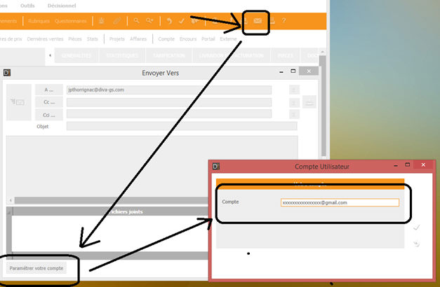

Remarque : Cette étape est obsolète si vous optez pour l'attribution d'un compte Windows par compte G Suite (voire la section Sécurisation des comptes G Suite).
Le champ "Compte" de DivaltoViewer ne peut jamais être propagé.
En conséquence, il faut que chaque utilisateur renseigne son compte G Suite.
Pour cela, il faut ouvrir le zoom des tiers, aller sur une fiche tiers, puis cliquer sur "Envoyer un mail".
En bas à gauche de la fenêtre de saisie du mail, le bouton "Paramétrer votre compte" permet d’ouvrir la fenêtre pop-up où l’utilisateur pourra renseigner son adresse G Suite.
